Satranç Efendileri / Chess Masters
Evidence for the App Review Board · App Apple ID 6824209509 · BigeranSoft (Team 4JXC5QJ2FC)
| App | Rejected at |
|---|---|
| Zeka Oyunları | 16:31:08 UTC |
| EvStok | 16:31:13 UTC |
| Satranç Efendileri | 16:31:32 UTC |
| Frosthold | 16:31:46 UTC |
| JustDisabled | 16:32:47 UTC |
These apps share no engine, codebase or category. We ask for an individual, hands-on review of this app.
What this app is
A 3D “living chess” game. Every piece is a rigged, animated character, and each capture plays as a cinematic fight on the square. All code was written by BigeranSoft in Unity C#, with a dedicated TypeScript server.
- Our own chess engine with 8 AI levels that make human-like mistakes, plus local two-player mode.
- Online play: matchmaking, room codes, clocks, Glicko-2 ratings, fair-play checks, friends.
- Weekly leagues and seasons, correspondence games, and a Nations Cup where wins score for your country.
- Learning tools: puzzles, opening names, an endgame trainer and post-game analysis.
- Characters made with our Meshy subscription and animated with Mixamo; textures CC0, music CC-BY (credited in the app).
- No template or chess kit. Only standard libraries: chess.js on the server and Stockfish for analysis.
How to verify in a few minutes
Play against the AI without an account and capture any piece to see the cinematic.
Screenshots from the submitted build

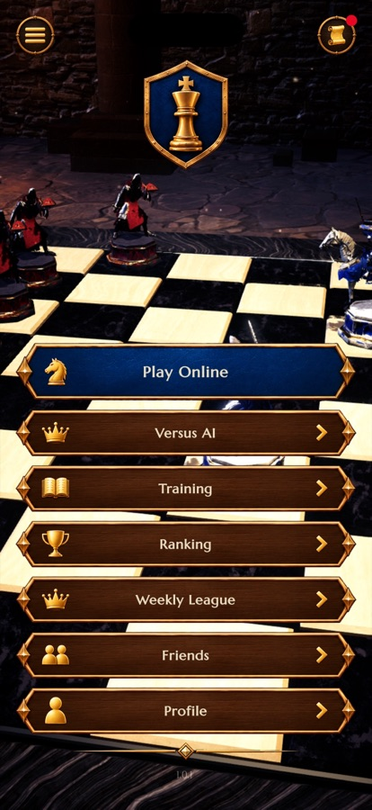

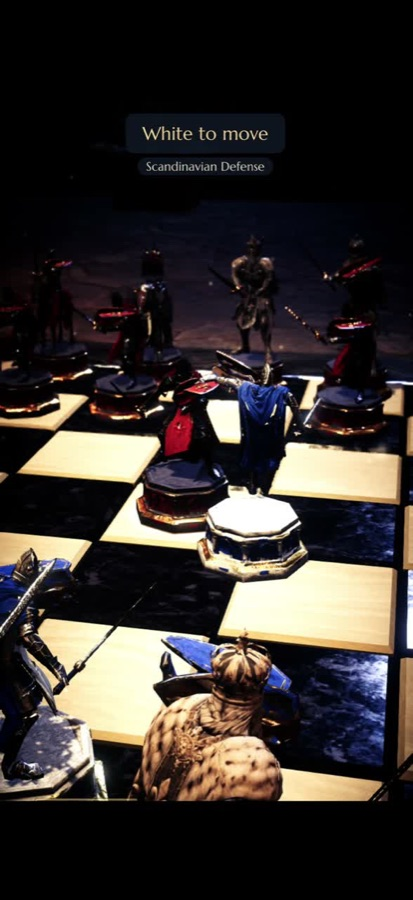

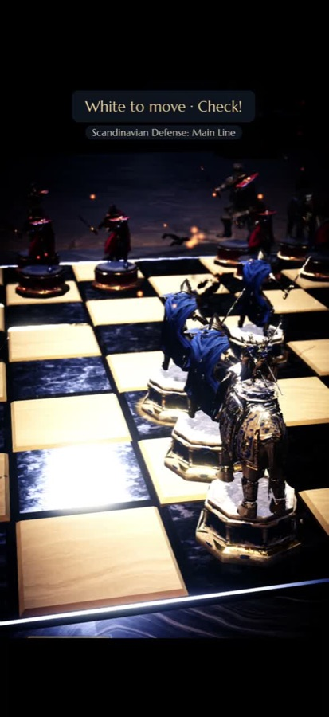

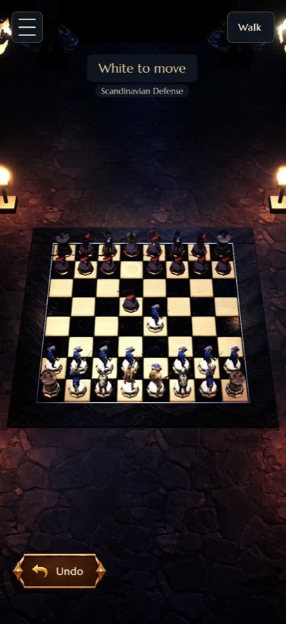
Video
Gameplay and capture cinematics (103 s)
Compared with our other apps
Guideline 4.3(a) says the app is similar to apps “submitted by you”. Below are the store screenshots of every app on our account: different products, designs and audiences. The highlighted one is this app.
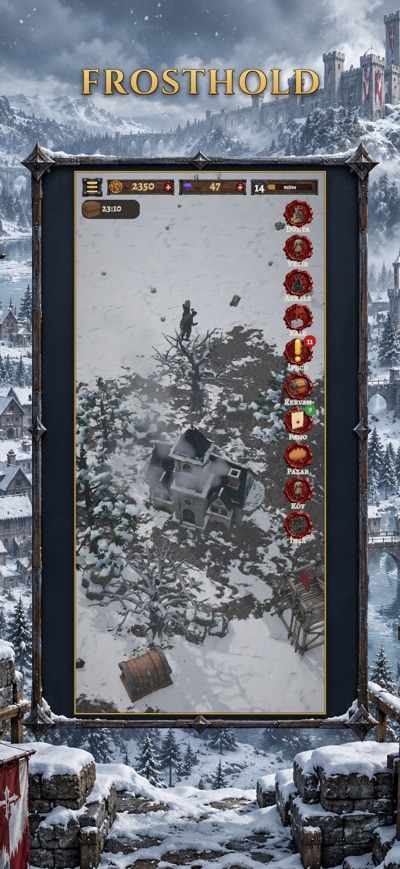
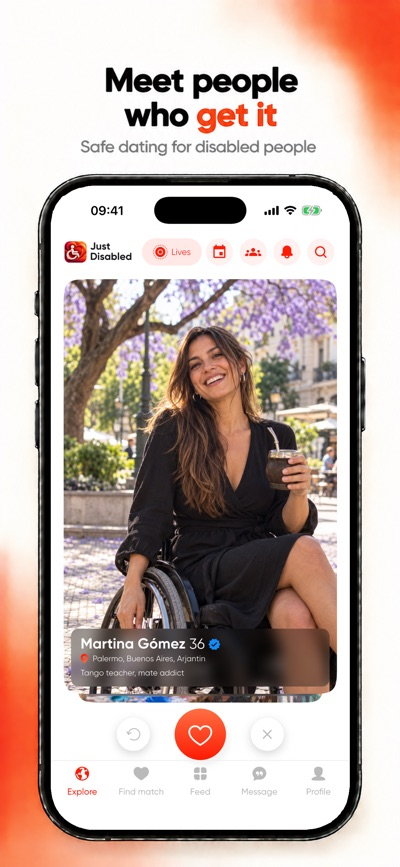
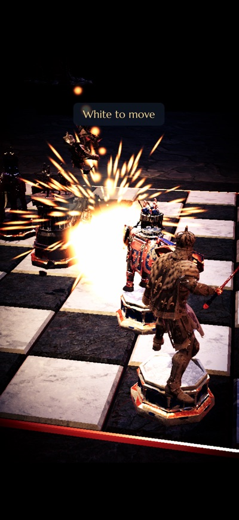
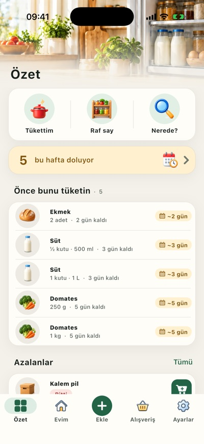
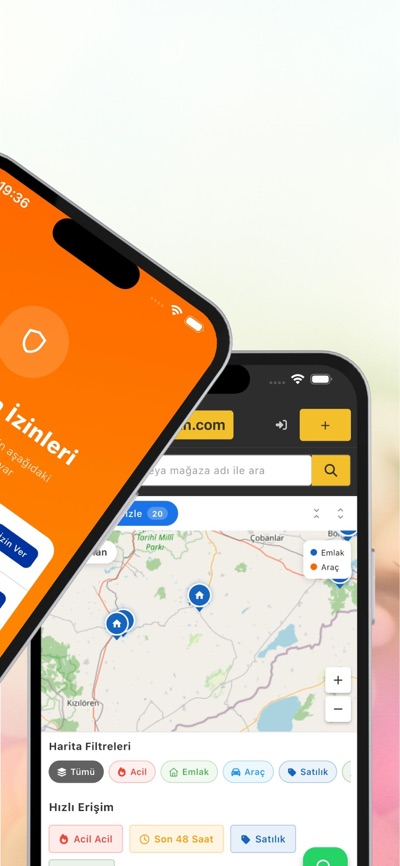
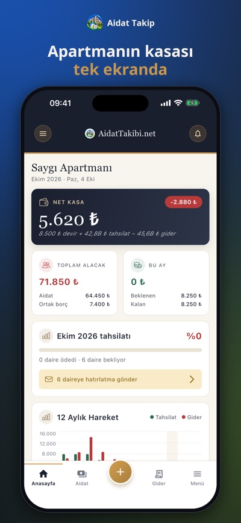
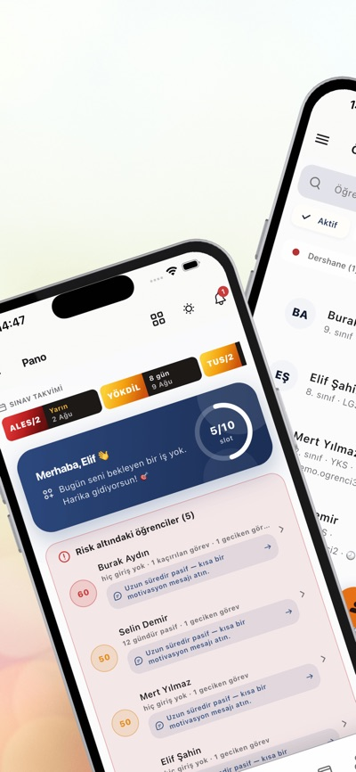
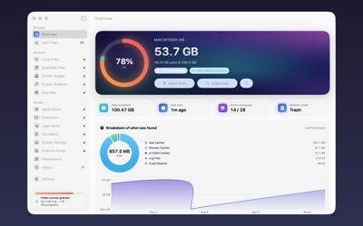
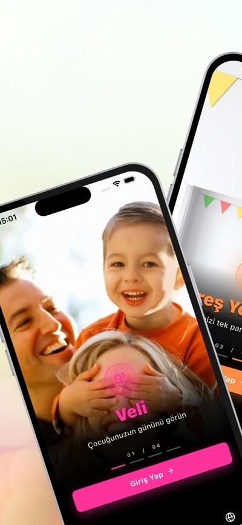
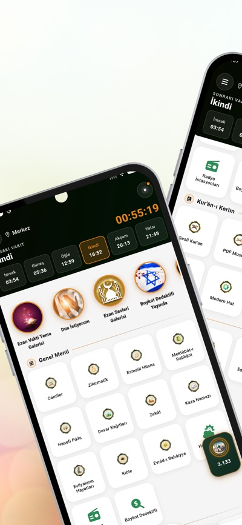
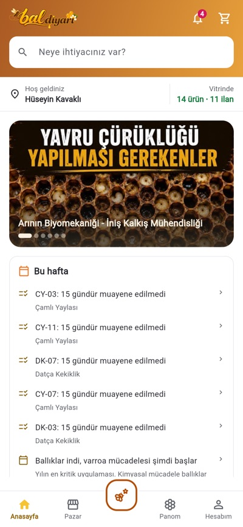
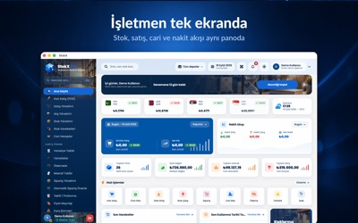
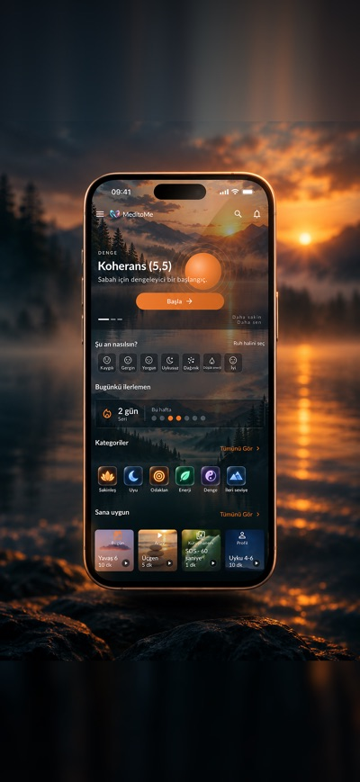
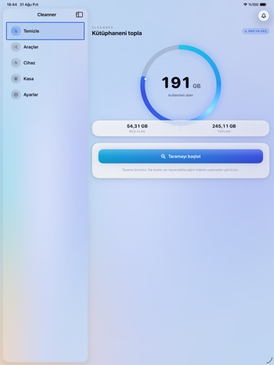